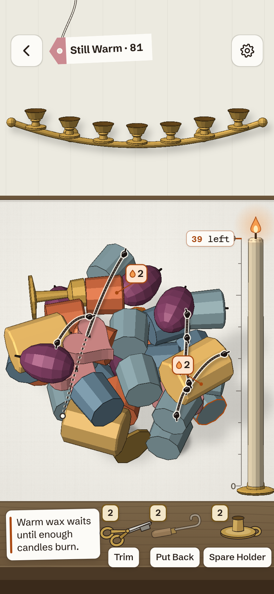
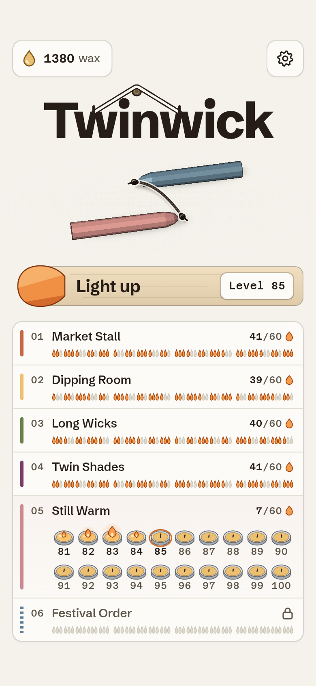
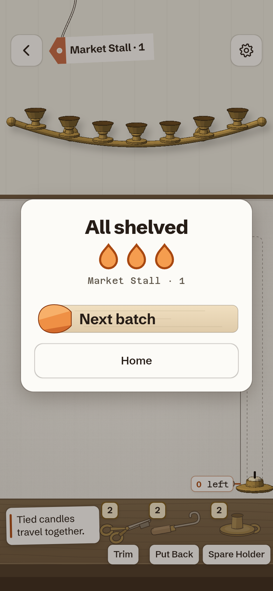

How it plays
Count the holders before you pull a wick
- Tap any candle you can see. Even one half buried in the heap. It stands up in one of seven brass holders on the wall rail.
- Three alike burn away. They catch for a moment, go out in a curl of smoke, and free their holders.
- Tied candles travel together. Two or three candles on one wick go up as a group, buried ones included. If the group will not fit, the wick goes taut and nothing is lost, so count the free holders first.
- Warm wax waits. A candle marked with a number lifts only after that many triples have burned.
- Clear the cloth to shelve the batch. Seven full holders and no three alike ends it; play it again for free.
What is in the box
120 levels, three tools, nothing chasing you
- 01Market Stall
- 02Dipping Room
- 03Long Wicks
- 04Twin Shades
- 05Still Warm
- 06Festival Order
- Trim cuts a wick, so its candles go alone.
- Put Back returns your last move to the heap.
- Spare Holder adds an eighth holder for the rest of the level.
Each level earns one to three flames: use five holders or fewer for all three. Tools cost wax, which you earn by winning. Optional wax packs are sold in the app; every level stays free.